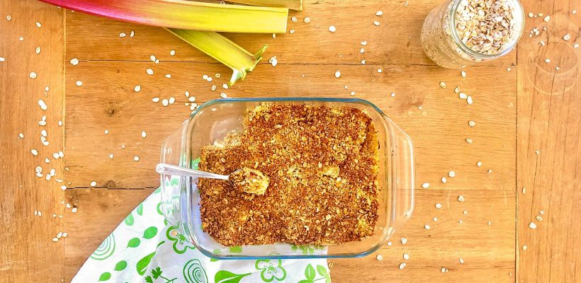

La saison de la rhubarbe est relativement courte : elle s’étale d’avril à juin. C’est donc l’occasion de mettre à l’honneur ce fruit délicieux et très riche en fibres.
La pâte à crumble traditionnelle a été revisitée pour une version un peu plus saine à base de flocons d’avoine.
Ingrédients4 à 6 personnes
- 900g de rhubarbe fraîche (env. 600g épluchée)
- 90g de flocons d’avoine
- 90g de poudre d’amande
- 40g de sucre de canne complet (à ne pas confondre avec le sucre roux)
- 50ml d’huile d’olive
- 1 c. à soupe de miel
1
Lavez la rhubarbe, coupez les extrémités et épluchez-la. Puis, coupez-la en petits tronçons de 1 à 2 cm. Préchauffez votre four à 180°C.
2
Dans un saladier, mélangez les flocons d’avoine, la poudre d’amandes et le sucre. Puis, ajoutez l’huile d’olive et le miel et malaxez l’ensemble avec vos doigts.
3
Dans un plat allant au four, répartissez les fruits. Puis, ajoutez par-dessus la préparation à base de flocons d’avoine. Enfournez pour 30 minutes.
Bon appétit 😊

Bonjour, pouvez vous m’indiquer une recette de gâteau au chocolat avec des noisettes. En vous remerciant.
C’est délicieux, j’ai juste rajouté un soupçon de cannelle dans la pâte à curable….Merci pour vos recettes.
Très bon 😋
Juste délicieux ! Merci 😊
Un vrai délice, j’adore😋😋😋
Pas besoin de faire macérer la rhubarbe dans du sucre comme pour une tarte?
Hummm. Un régal. Testé ce week end, mais sans mettre d’huile. On sent le bon goût du miel, c’est excellent et pas trop lourd. Un grand merci pour vos recettes.
Comment pouvez-vous dire que vous avez testé si vous n’avez pas mis d’huile ?
Vos recettes sont super
Vendez vous un livre ?
Un petit délice, présenté tiède avec une boule de glace aux fruits rouge, ils ont adorés, peut être un peu moins d’huile….40 ml ? J’essaierai la prochaine fois
Recette délicieuse !!! Au début un peu réticente à faire un dessert avec de l’huile d’olive… mais je me suis lancée (en croisant les doigts) et ça valait vraiment le coup!! Le crumble n’a pas fait long feu…! Bravo et merci Blomy pour vos recettes super saines et très savoureuses
Bonjour,
J’ai essayé votre recette de crumble rhubarbe. Il n’y aurait pas une erreur dans le dosage de l’huile d’olive?
Merci d’avance pour votre réponse
Cordialement
corinnegiuliani @ free.fr
Humm ce crumble à la rhubarbe est vraiment délicieux !! J’ai juste rajouté un peu de sucre directement sur la rhubarbe avant cuisson pour atténuer l’acidité. Une recette saine et au top que je vais refaire sans hésiter 😊 Merci Blomy !!!
Je viens de suivre la recette, c’est délicieux ! je m’en lèche les babines ! merci
Bonjour,
Est il possible de faire cette recette avec un autre fruit et lequel?
Merci de votre réponse
Merci pour ces chouettes recettes!
Pour le crumble, afin d’économiser le gaz ou si l’on n’a pas de four, on peut aussi faire une compote de rhubarbe et rajouter le crumble fait à la poêle.
J’ai testé la recette hier avec de la rhubarbe surgelée, sans miel et en remplaçant le sucre par de la stévia.
Le résultat n’avait pratiquement aucun goût.
J’espère que vous apprécierez plus cette recette que moi.
Cordialement.
En même temps si vous remplacez les ingrédients et sans aucun sucrant, pas étonnant…
Très très bonne idée ces recettes.
Merci.
Bonjour, vous ecrivez : « Dans un plat allant au four, répartissez les fruits » … Les fruits, vraiment ?…
Bonjour l équipe
Je n ai qu’ une chose à dire
MIAM 😍
💐
pourquoi ne pas utiliser que du miel comme sucre?
Je n’aime pas le miel
Nous nous sommes régalé après avoir ajouté un peu de sucre sinon c’était trop Acide.
La prochaine fois je mettrai 50g de sucre directement sur la rhubarbe avant d’y mettre le crumble.
Merci pour cette recette délicieuse.
Sébastien
Merci pour les bonnes recettes
Je diffuse le site à mes amies
Cordialement
Bonjour,
Testé ce midi vraiment excellent ce mélange de saveurs et de textures !
(Non pas trop acide mais juste ce qu’il faut pour contraster avec le crumble sucré)
Mangé encore un peu tiède avec une boule de glace vanille
Merci pour cette recette et pour les autres
La rhubarbe est super acide, et il y a assez peu de sucre dans la partie crumble. Pour ceux qui ont essayé cette recette, pourriez vous me dire si c’est pas trop acide.
j’ai cuisiné des rhubarbes surgelés et l’acidité est bien moindre voir quasiment disparue ; sinon le miel c’est très bon pour sucrer
bonjour Mary
j’ai l’habitude de faire des desserts avec la rhubarbe et je trouve qu’en cuisant elle perd un peu de son acidité. je n’ai pas encore réalisé cette recette mais je pense que cela devrait être suffisant pour le sucre
Pour enlever l’acidité trop forte des premières rhubarbes, je les blanchis quelques minutes (verse de l’eau bouillante dessus).
Quand j’utilise ce procédé je ne rajoute presque pas de sucre sur mes tartes.
Et tout ça pour combien de calories et indice glycémique ?
Merci de penser aux diabétiques qui essayent de faire attention à leur santé.
Il devrait être obligatoire de rappeler cet indice pour toutes les recettes même si ça n’a qu’une valeur indicative.
Pour couper l’acidité, il suffit de faire tremper la rhubarbe dans de l’eau froide salée pendant 20 minutes.
J’ai lu ça sur internet et c’est ce que je fais à chaque fois.
recette testée avec d’autres fruits (des mangues …. j’habite à la Martinique)
mais je cherche des recettes alternatives aux crumbles classique
pour rester dans l’esprit, j’ai mis
150 gr de flocons d’avoine
de la purée d’amande à la place de l’huile d’olive (trop fruitée pour cette recette à mon gout )
50 gr de sucre de fleur de coco mais pas de miel
c’était très très bon !!!
merci Blomy pour ces bonnes idées … que j’ai adaptées 😉
Bonjour la Martinique
La pate n’est pas trop molle ?
Sympa, je vais essayer. Un détail: c’est une tige, pas un fruit…
Là, vous chipottez….
C’est à dire il faut cuire la rhubarbe avant pas trop clair
En botanique..c’est une tige mais en gastronomie fait partie des fruits….comme les tomates, aubergines, courgettes….sont des fruits en botanique mais des légumes en gastronomie.
Non elle cuit au four
La rhubarbe va cuire sans eau ?
La rhubarbe contient beaucoup d’eau, donc il ne faut pas en rajouter pour la cuire. Juste la laisser confire.
j’ai suivi la recette sans cuire la rhubarbe avant et bien…
C’est délicieux ! Je n’avais pas de poudre d’amandes, J’ai donc juste concassé des
amandes que j’avais et ça rajoute un petit côté croquant 🙂
Moi quand je n’ai pas d’amandes je concasse des noisettes dans n’importe quelle recette
Sa fait ,Beaucoup de choses.
Ca fait ;
ça fait
il ne s’agit pas d’une dictée il me semble, juste d’un commentaire
Mesquin pour cette remarque de faute d’orthographe….
Ça fait et non en bon français
Cela fait
Je vais essayer mais d’abord avoir tous les ingrédients
Il faut que je me secoue pour faire toutes ces bonnes recettes
Merci beaucoup 😊
J.